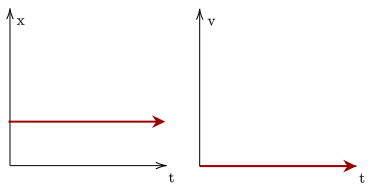
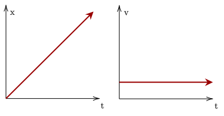
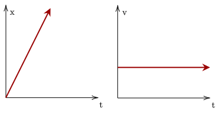
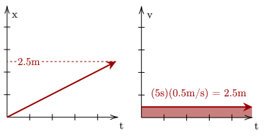
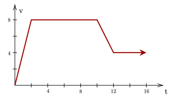
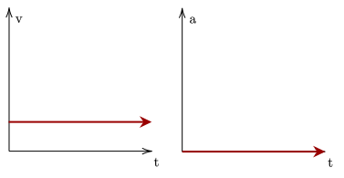
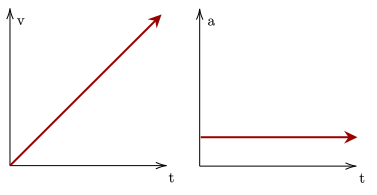
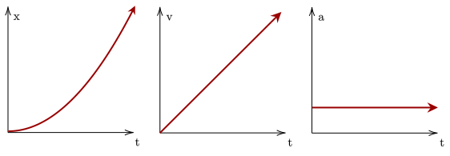

One way to visualize the relationship of the three main quantities of motion is via graphing them over time. These are collectively called motion graphs.
We first visualize an object at rest. Since the object is at rest, its position should be constant, and its velocity should be at zero. We firstly focus on the velocity-time and position-time graphs only.

One thing of note is that the constant position can be set anywhere, as long as it is constant. The position of the particle can thus be represented by an arbitrary constant .
We then analyze a graph of an object in motion, without accelerating. This means that acceleration is zero, however there is now a constant velocity.

Since there is now a constant velocity, there is a constant change in position. This can be seen by the line now sloping upwards, indicating an increase in position (or distance away).
Furthermore, if one increases the velocity, the slope of the position changes as well. This aligns with that velocity is the rate of change of position, or the slope of it. We can also analyze the slope when the velocity is negative, which causes the position to be negative or go backwards.

One important thing to note is that the total displacement away from the original position can be calculated by taking the area under the graph of velocity. For example, if one were to run at 0.5m/s for 5s, we would run 2.5m, and this is reflected in the graph below.


(1) The section from 0-2 is a triangle with base of 2 and a height of 8, so the area is 8.
(2) The section from 2-10 is a rectangle with base 8 and height 8, so the area is 64.
(3) The section from 10-12 is a trapezoid with bases 4 and 8, with height 2, so the area is 12.
(4) The section from 12-16 is a rectangle with base 4 and height 4, so the area is 16.
Let's now try graphs where the object is accelerating or decelerating. Firstly, let's analyze an object with constant velocity, focusing on the acceleration-time and velocity-time graphs only.

There is a similarity with the object at rest, wherein the velocity doesn't change as the change in velocity (acceleration) is zero. This velocity can be at an arbitrary constant , as long as it remains constant.
This similarity also holds with a particle in constant acceleration, where the velocity changes at a constant rate. This is because acceleration is the rate of change of velocity, and thus dictates its slope.

We can see that the acceleration also determines the slope of the velocity. This is analogous to how position's slope is determined by velocity.
Finally, we can analyze the effect of acceleration on the position. Since velocity's slope is based on acceleration, and thus the slope of velocity is increasing (linearly), we can expect the position-time graph to increase at a higher rate (quadratically).
